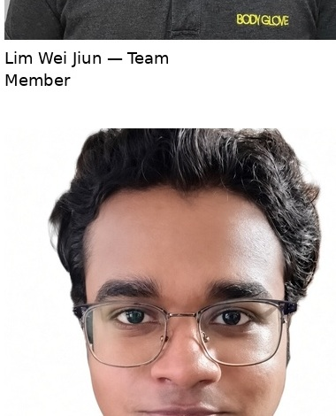

TEAM LEADER
Joel Joseph Lester Sellep
AgroSpace Xcel
NASA SPACE APPS CHALLENGE 2026 · FIELD SHIFT
We are AgroSpace Xcel — five first-year Aerospace Engineering students from Universiti Sains Malaysia (USM), building FieldShift to turn Earth-observation signals into clearer agricultural decisions.
01 · FIELDSHIFT
Click anywhere on the map to pin a field. The dashboard and crop-rotation comparison update automatically for the selected location.
02 · DECISION SUPPORT
Your current rotation and three options that best fit this location's environmental conditions and resources.
Continuous rice production is used here as the baseline for comparison.
Prototype comparison: scores are illustrative decision-support values, not agronomic prescriptions. A real deployment would replace them with validated local crop and NASA-derived data.
03 · SYSTEM WORKFLOW
Select a farming area on the interactive map.
Bring together rainfall, soil moisture, temperature and vegetation signals.
Translate the signals into clear field-health and risk indicators.
Compare options and support more climate-aware farm decisions.
04 · MEET THE TEAM
Five first-year Aerospace Engineering students from Universiti Sains Malaysia (USM).
AgroSpace Xcel

AgroSpace Xcel

AgroSpace Xcel

AgroSpace Xcel

AgroSpace Xcel